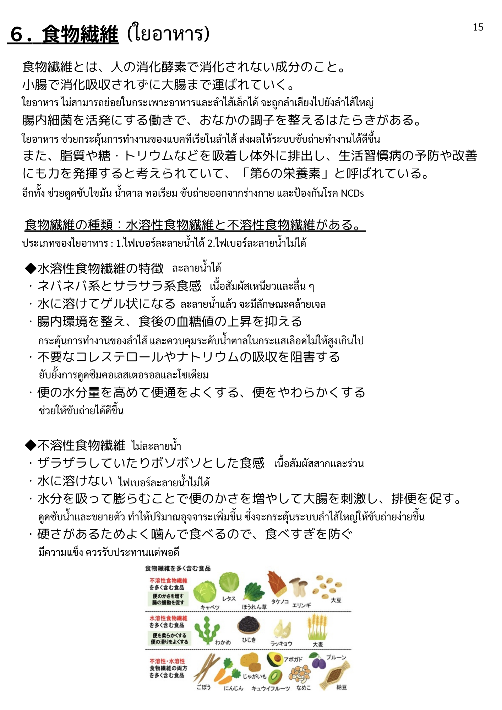

| 漢字 | ひらがな | ความหมาย (ไทย) |
|---|---|---|
| 食物繊維 | しょくもつせんい | ใยอาหาร |
| 人 | ひと | คน |
| 消化酵素 | しょうかこうそ | เอนไซม์ย่อยอาหาร |
| 消化 | しょうか | การย่อยอาหาร |
| 成分 | せいぶん | ส่วนประกอบ / สาร |
| 種類 | しゅるい | ชนิด / ประเภท |
| 第6の栄養素 | だいろくのえいようそ | สารอาหารตัวที่ 6 |
| 呼ぶ | よぶ | เรียก / ขนานนาม |
| 漢字 | ひらがな | ความหมาย (ไทย) |
|---|---|---|
| 小腸 | しょうちょう | ลำไส้เล็ก |
| 大腸 | だいちょう | ลำไส้ใหญ่ |
| 腸内細菌 | ちょうないさいきん | แบคทีเรียในลำไส้ |
| 腸内環境 | ちょうないかんきょう | สภาพแวดล้อมในลำไส้ |
| 活発 | かっぱつ | กระตือรือร้น / ทำงานดี |
| 便 | べん | อุจจาระ |
| 便通 | べんつう | การขับถ่าย |
| 排便 | はいべん | การถ่าย / ขับถ่าย |
| 水分量 | すいぶんりょう | ปริมาณน้ำ |
| 漢字 | ひらがな | ความหมาย (ไทย) |
|---|---|---|
| 水溶性食物繊維 | すいようせいしょくもつせんい | ใยอาหารชนิดละลายน้ำ |
| 不溶性食物繊維 | ふようせいしょくもつせんい | ใยอาหารชนิดไม่ละลายน้ำ |
| 水溶性 | すいようせい | ละลายในน้ำ |
| 不溶性 | ふようせい | ไม่ละลายในน้ำ |
| 特徴 | とくちょう | ลักษณะเด่น / จุดเด่น |
| 食感 | しょっかん | เนื้อสัมผัส (อาหาร) |
| 溶ける | とける | ละลาย |
| ゲル状 | げるじょう | ลักษณะคล้ายเจล |
| 漢字 | ひらがな | ความหมาย (ไทย) |
|---|---|---|
| 運ぶ | はこぶ | ขนส่ง / ลำเลียง |
| 調子 | ちょうし | สภาพ / การทำงาน |
| 整える | ととのえる | ปรับ / จัดให้สมดุล |
| 脂質 | ししつ | ไขมัน / ลิปิด |
| 糖 | とう | น้ำตาล |
| ナトリウム | なとりうむ | โซเดียม |
| 吸着 | きゅうちゃく | การจับ / ดูดติด |
| 体外 | たいがい | ภายนอกร่างกาย |
| 排出 | はいしゅつ | การขับออก |
| 血糖値 | けっとうち | ระดับน้ำตาลในเลือด |
| 上昇 | じょうしょう | การเพิ่มขึ้น |
| 抑える | おさえる | ยับยั้ง / ควบคุม |
| 不要 | ふよう | ไม่จำเป็น / ส่วนเกิน |
| コレステロール | これすてろーる | คอเลสเตอรอล |
| 阻害 | そがい | ขัดขวาง / ยับยั้ง |
| 高める | たかめる | เพิ่ม / ยกระดับ |
| 良くする | よくする | ทำให้ดีขึ้น |
| 柔らかい | やわらかい | นุ่ม / อ่อน |
| かさ | かさ | ปริมาตร / กากใย |
| 増やす | ふやす | เพิ่ม |
| 刺激 | しげき | การกระตุ้น |
| 促す | うながす | ส่งเสริม / กระตุ้น |
| 膨らむ | ふくらむ | พองตัว / ขยายตัว |
| 漢字 | ひらがな | ความหมาย (ไทย) |
|---|---|---|
| 生活習慣病 | せいかつしゅうかんびょう | โรคจากพฤติกรรม/ไลฟ์สไตล์ |
| 予防 | よぼう | การป้องกัน |
| 改善 | かいぜん | การปรับปรุง / ทำให้ดีขึ้น |
| 効果 | こうか | ผล / ประสิทธิภาพ |
| 期待 | きたい | ความคาดหวัง |
| 満腹感 | まんぷくかん | ความรู้สึกอิ่ม |
| 食べすぎ | たべすぎ | การกินมากเกินไป |
| 防ぐ | ふせぐ | ป้องกัน |
| 硬さ | かたさ | ความแข็ง |
| 噛む | かむ | เคี้ยว |
| 漢字 | ひらがな | ความหมาย (ไทย) |
|---|---|---|
| 海藻 | かいそう | สาหร่าย |
| こんにゃく | こんにゃく | บุก / คอนยัค |
| 果物 | くだもの | ผลไม้ |
| 野菜 | やさい | ผัก |
| 豆類 | まめるい | ถั่ว (ประเภทถั่ว) |
| 穀類 | こくるい | ธัญพืช |
| いも類 | いもるい | มันชนิดต่าง ๆ |
| きのこ類 | きのこるい | เห็ดชนิดต่าง ๆ |
| 大豆 | だいず | ถั่วเหลือง |
| 漢字 | ひらがな | ความหมาย (ไทย) |
|---|---|---|
| 運ばれる | はこばれる | ถูกนำพา / ขนส่ง |
| 考えられる | かんがえられる | ได้รับการพิจารณา |
| 含む | ふくむ | รวม / มี |
| NCDs | えぬしーでぃーず | โรคไม่ติดต่อเรื้อรัง |